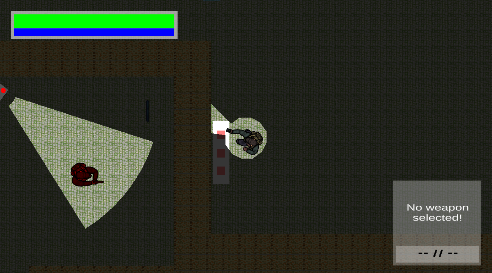

A published top-down tactical shooter with limited FOV. Infiltrate a secretive laboratory, avoid enemies and security cameras, collect keys, and advance deeper into the facility.

Operation Metal Lab is a published top-down tactical shooter where the player must navigate tight laboratory corridors while managing visibility, eliminating enemies, and collecting keys to unlock restricted areas. The limited field of view mechanic forces careful planning — you can't react to what you can't see.
This is a fully published, playable game — not just a prototype. It went through a complete development cycle including level design, playtesting, and release on itch.io. The limited FOV mechanic creates genuine tension that most university projects don't achieve.